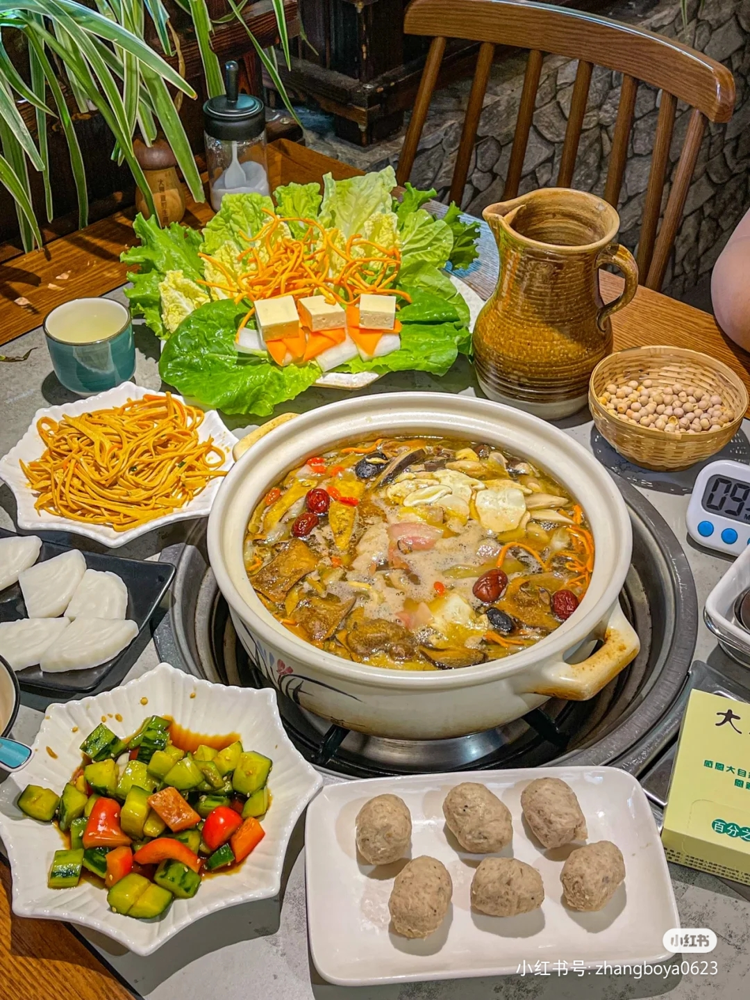
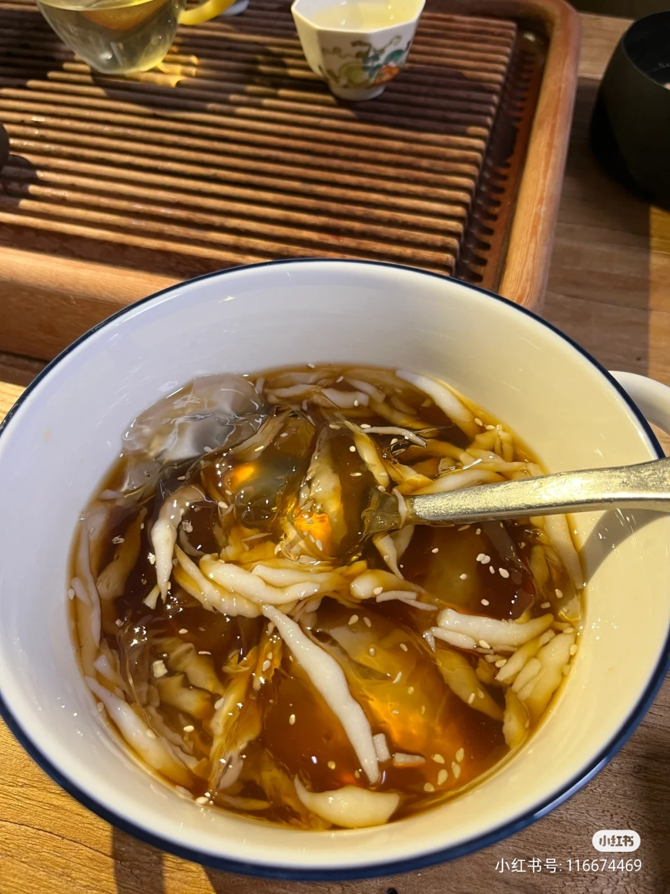
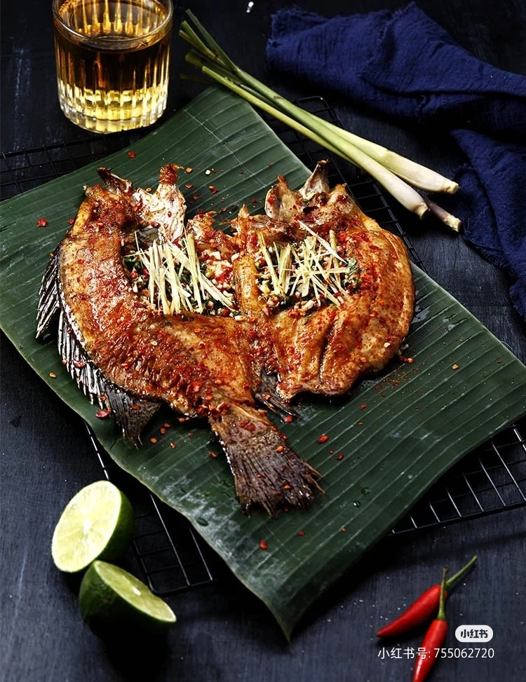
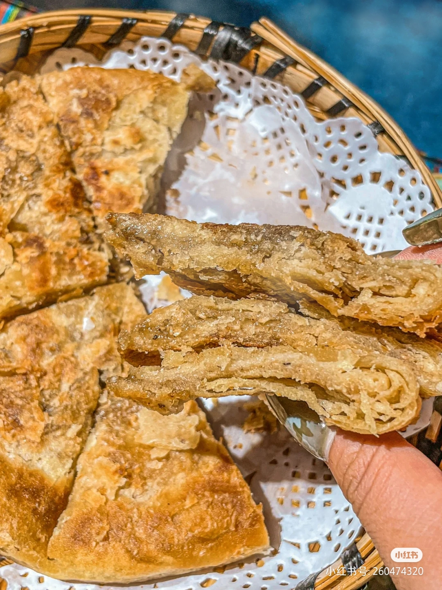
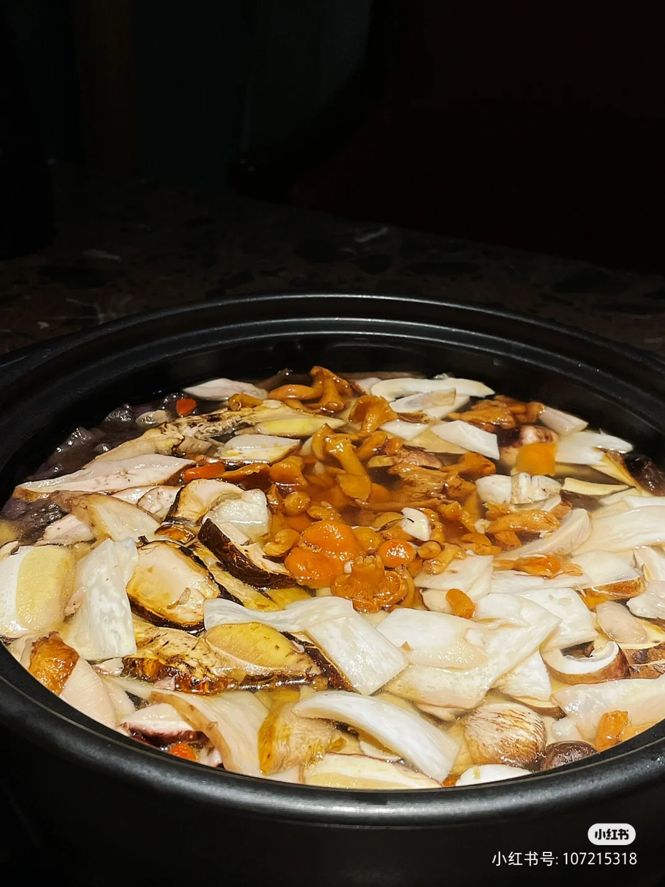
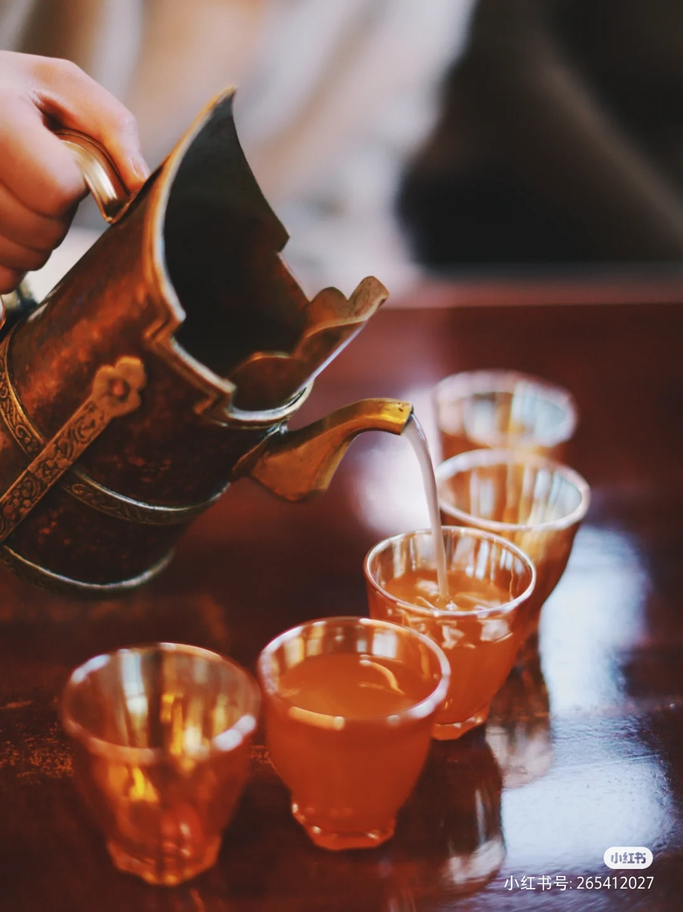

野生菌火锅是云南特有的美味，楚雄野生菌火锅是云南六大名吃之一，食材生态、味道鲜美，是无数食客的最爱。云南复杂的地形地貌，多样的森林类型、土壤种类以及独特的立体气候条件，孕育了丰富的野生食用菌资源，种类多，分布广，产量大。
野生菌是云南省特有的野生食用菌，生长在海拔2000--4000米，地形地貌复杂的立体气候地。云南野生食用菌分为二个纲、十一个目、三十五个科、九十六个属、约二百五十种，占了全世界食用菌一半以上，中国食用菌的三分之二。
2018年9月，被评为“中国菜”之云南十大经典名菜。
饵块为云南特有的著名小吃，也是大理地区常见的传统食品之一。饵块用优质大米加工制成，其制作过程是将大米淘洗、浸泡、蒸熟、冲捣、揉制成各种形状。一般分为块、丝、片三种。制作方法烧、煮、炒、卤、蒸、炸均可，风味各异，久食不厌。烧饵块可以在大理的街道小摊上买到，其他方式的吃饭可以在一些米线餐厅吃到。
木瓜水的性状有点像果冻，但比果冻口感软滑。传统的容器是铝盆，凝结好的木瓜凉粉在太阳下盈盈晃动着凉爽的波光。木瓜水以大理的“冰粉”最具代表性，在当地的小摊或一些餐厅都有卖。
邓川水草丰茂，白族、汉族，家家户户都养奶牛，故有“乳牛之乡”的称誉。以牛乳制成的“邓川奶粉”，是云南省最优质的奶粉，而身着白族衣服的大嫂卖的邓川乳扇，是家喻户晓的名特食品。乳扇携带方便，造型特殊，食用也方便，烤、炸、凉吃均可，甜、咸都适宜。乳香沁脾，酥脆泡松，是下酒好菜，也是名特小吃。烤乳扇在大理街边小摊都有卖。
“头顶香蕉，脚踩菠萝，摔一跤还抓一把花生”，版纳人这样自豪地对外地人介绍自己的家乡。西双版纳野生水果可食用的近五六十种。丰富的野生水果早就被驯化为家种水果，如芭蕉、香蕉、菠萝蜜、番木瓜、荔枝、龙眼等，在西双版纳早已有栽培，解放后又不断将适宜热带亚热带种植的水果引进栽培，形成今日西双版纳“四季蔬果鲜”的情形。作为一个热爱水果的人，如果没尝过西双版纳的热带水果，瞬间就会觉得LOW了一大截。
在烤制食品当中，烤鸡随处可见，但冠以地域名称的“勐海烤鸡”，那是沉淀和凝结了云南西双版纳傣族人们的生活智慧，具有独特的异域民族风情，是民族饮食文化的一大特色。这种鸡比较袖珍，是当地特有的小子鸡，比普通鸡要小很多，胃口好的人可以吃下三只。
把鱼的鳞片去掉，用刀划开鱼背，去掉肠肚杂物，洗净；将葱、姜、蒜、青辣椒、芫荽切细，与盐拌拢；把佐料放进鱼肚子里，把鱼肚子合拢，用二三根香茅草叶捆好，用竹片夹紧，放在火炭上烘烤。待八成熟时，抹上猪油，继续烘烤5分钟左右，即可食用。这种烤鱼具有香、酥、脆的特点，极能增进食欲。
常见的包烧菜肴有包烧鱼、虾等水鲜、包烧野蘑菇、南瓜尖、甜笋等蔬菜；包烧肉等。包烧的菜肴不会走味、养分不会挥发散失，堪称“原汁原味”俱在。是具有民族特色的美食。
云南跟四川都吃辣，可辣的方式不同，云南这边都是这种干辣椒粉，而四川耍的就是那勺红油，各有各的好。豆腐乳放进去，味道就更赞了。汤开了，浇一点排骨汤，吃腊排骨火锅的蘸水就做好了，放一根排骨进来，泡一下，风味绝佳。若问吃腊排骨火锅何处去，当地人的回答是：象山市场是也。别说旁边所有的店铺都卖腊排骨，下午两点，家家歇业，只有“钰洁”店里，还是有很多人，尤其是当地人在吃饭。这是判断饭菜好吃与否最重要的指标之一。店内环境一般，但菜品的确丰富、美味。在丽江吃火锅，很好算钱，腊排骨火锅一个价钱，剩下的配菜都是4元一份，很是公道的价格。
鸡豌豆凉粉是纳西族喜爱的一种传统食品，它产于丽江坝，属黄豆科，因其形状像鸡头部位的眼睛，故名鸡豌豆粉。这种豆类经碾磨制成粉条，颜色呈灰绿色，煎炸，凉拌都很入味，清香可口，是纳西族餐桌上的佳肴。
主要原料是当地的精麦面，再加上火腿、化油、糖等佐料，将其调匀，揉制成层。吃上一口金黄酥脆，香甜可口，油而不腻。“丽江粑粑”最正宗的那家是在青年旅舍的对面，靠近木府。从木府过去后右转，到第一个路口左转，往里走20米，就是青年旅舍，对面就是个卖“丽江粑粑”的。当地人卖1.5元一个，旅游者卖3~3.5元一个，所有的“丽江粑粑”应该都是从他们价批发的，然后卖8元一个。品种很多，味道也很多，不下20种，很好吃，尤其是热的时候。
米灌肠是由猪血、米饭及各种香料，按照一定的配比拌在一块儿，然后灌入加工过的猪肠子而制成的米饭肠。可以在大石桥小吃那里尝尝。位于古城大石桥，是丽江开办最早的最地道的传统面食小吃店，有80余年历史。
香格里拉特产美食，味道鲜美、营养丰富。松茸现在备受人们青睐，就是因为其具有显著的功效与作用。食用松茸，可以强身健体、补肾壮阳、调和肠胃、补益气血、化痰驱虫等。松茸的诸多吃法中，现今有一种叫做松茸刺身。其就是将洗干净的新鲜松茸切成薄片，蘸着芥末等吃。松茸属于高端产品，好多人闻其名而未食其物。菌农拾到野生松茸，通常会卖掉，舍不得吃它们。
云南野生松茸品质好，产销占比皆大。全省不少地方有野生松茸分布，只不过香格里拉是公认的最佳松茸产区。云南松茸产量占全国松茸产量的40%以上，而迪庆州香格里拉市的松茸占云南鲜松茸出口量的65%以上。迪庆已成为云南名副其实的“松茸之乡”。
香格里拉特色美食，味道鲜美、嚼劲十足。牦牛肉火锅则是藏餐美食中的极品汤鲜、肉嫰、味美是冬季必吃的美食，紫铜锅里装满了大片牦牛肉，炖煮到酥烂肉连着皮，皮连着筋回味绵长
青稞酒具有清香醇厚、绵甜爽净，饮后头不痛、口不渴的独特风格，在强手如林的酒类行业中独树一帜，在西部民族地区享有盛誉。由于其“地理环境独特、酿酒原料独特、大曲配料独特、制酒工艺独特、产品风格独特”，青稞酒魂承传400年，至今兴盛不衰被全国酿酒专家誉为“高原明珠、酒林奇葩”。
香格里拉特色美食，肉质紧实、味道香浓。藏香猪的品质上有“六个最”，即： 肉品中氨基酸含量最高，微量元素最高，脂肪含量最低，猪肠最长，猪皮最薄，鬃毛最长。是藏民的传统民族美食。尤其是猪皮，口味Q弹爽嫩，远异于一般生猪